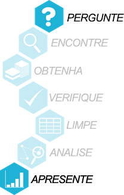
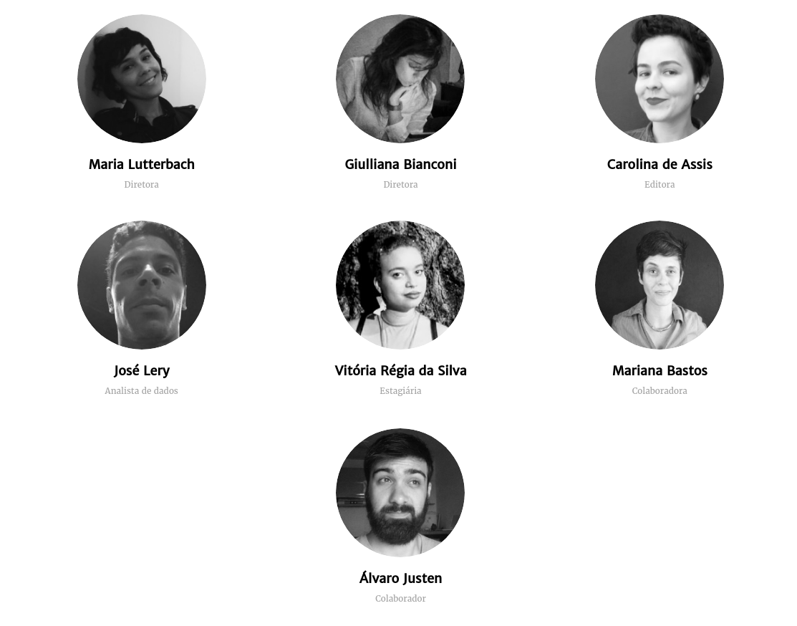
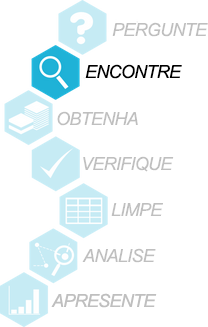
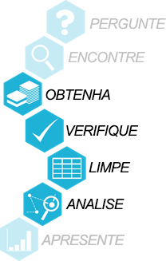
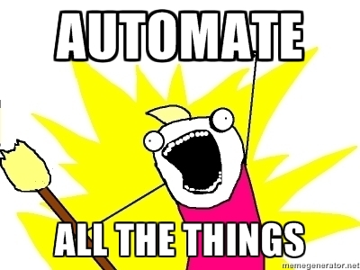

Gênero e Número: Python ajudando a entender as questões de gênero brasileiras
Turicas aka Álvaro Justen
PythonBrasil[13]
07 de outubro de 2017 - Belo Horizonte/MG

bit.ly/pybr13-gn
$ whoami
Turicas, prazer! =)
Sigam-me os bons:
{twitter,
github,
youtube,
slideshare,
instagram}
/turicas
turicas@pythonic.cafe
Blog: turicas.info

simplefractal.com

escoladedados.org

generonumero.media

impacto.jor.br


pythonic.cafe
youtube.com/c/PythonicCafe
Software Livre
Desde 2004

Python
Desde 2005


#CWB


Investigar as questões de gênero no Brasil e América Latina, com dados abertos e técnicas de jornalismo de dados.
generonumero.media
Jornalistas
Levantam questões e contam boas histórias

Equipe Gênero e Número
Dados Públicos
Informações de interesse público disponíveis como dados abertos

“ Dados abertos são dados que podem ser livremente usados, reutilizados e redistribuídos por qualquer pessoa - sujeitos, no máximo, à exigência de atribuição da fonte e compartilhamento pelas mesmas regras. ”-- OpenData Handbook (definição de Open Definition)
“ Quanto menos acessível está um dado, mais fechado ele está. ”
Pythonistas
Automação de processos



youtu.be/7yQ8U2tFFq4
Dados Abertos - Desafios
Maior parte do tempo dos projetos de análise de dados

Obtendo, verificando e limpando dados


“ O nível de acessibilidade de um dado é um filtro sobre quem conseguirá utilizá-lo. ”
Problema: Formato Ruim
#temqueverissoaí

Meu Próprio Leitor/Escritor de CSV
def le_csv(arquivo):
with open(arquivo, encoding='utf-8') as fobj:
return [linha.split(',')
for linha in fobj.readlines()]
def escreve_csv(linhas):
with open(arquivo, mode='w', encoding='utf-8') as fobj:
for linha in linhas:
fobj.writeline(','.join(linha))
NÃO FAÇA ISSO!
Leia o RFC do CSVDados Tabulares: Qual o Pior Formato?

youtu.be/mVkWZVtZDT0
rows to the rescue!
github.com/turicas/rows
csv com Python + rows
import rows
table1 = rows.import_from_csv('data/brazilian-cities.csv')
for row in table1:
print(row)
Row(state='PR',
city='Curitiba',
inhabitants=1751907,
area=435.04)
# namedtuple #FTW \o/
xls com Python + rows
import rows
table2 = rows.import_from_xls('data/brazilian-cities.xls')
for row in table2:
print(row)
html com Python + rows
import rows
table3 = rows.import_from_html('data/brazilian-cities.html')
for row in table3:
print(row)
import rows

Classificando Logradouros por Gênero
(nível fácil)

Show me the code
Capturando Dados Históricos das Olimpíadas
(nível médio)

Show me the CLI

Analisando Dados da Educação Superior
(parece fácil, mas é difícil)

Bash + rows + SQL


coda.escoladedados.org
25 e 26 de novembro de 2017
São Paulo/SP